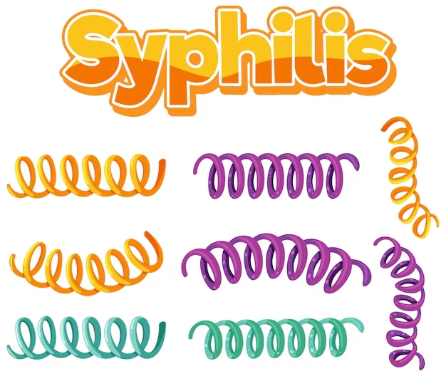

La sífilis es una infección causada por bacterias. La mayoría de las veces, se transmite por contacto sexual. La enfermedad comienza a hacerse presente con una llaga en los genitales, el recto o la boca, que no suele generar dolor. La sífilis se transmite de persona a persona a través del contacto directo con estas llagas. También se puede transmitir a un bebé durante el embarazo o el parto, y en ocasiones también por la lactancia. Luego de la infección, la bacteria de la sífilis puede permanecer en el cuerpo durante muchos años sin presentar síntomas. Sin embargo, puede reactivarse. Sin un tratamiento, la sífilis puede generar daños en el corazón, el cerebro y otros órganos. Puede volverse mortal. La sífilis temprana se puede curar, algunas veces con una sola inyección de un antibiótico llamado penicilina. Por eso, es fundamental hacerse controles de salud tan pronto como se detecte cualquier síntoma de esta enfermedad. Todas las personas embarazadas deben hacerse pruebas de detección de sífilis en el primer control prenatal.
